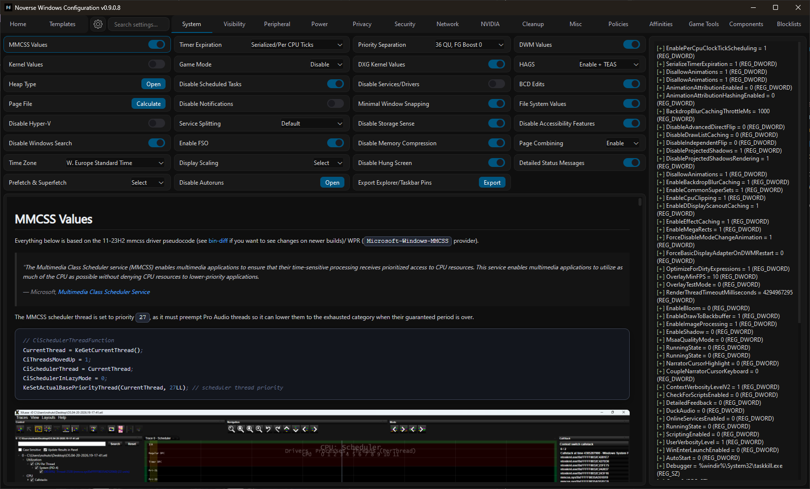
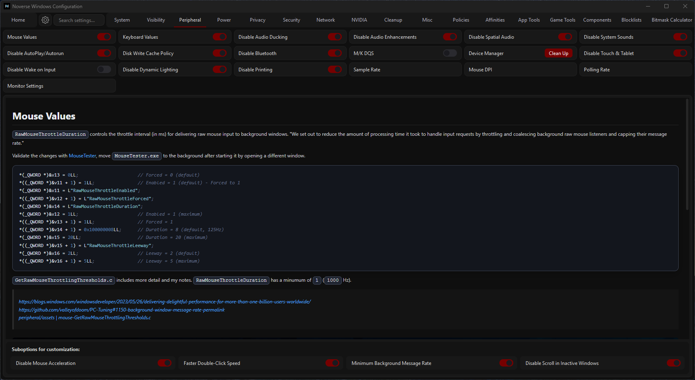
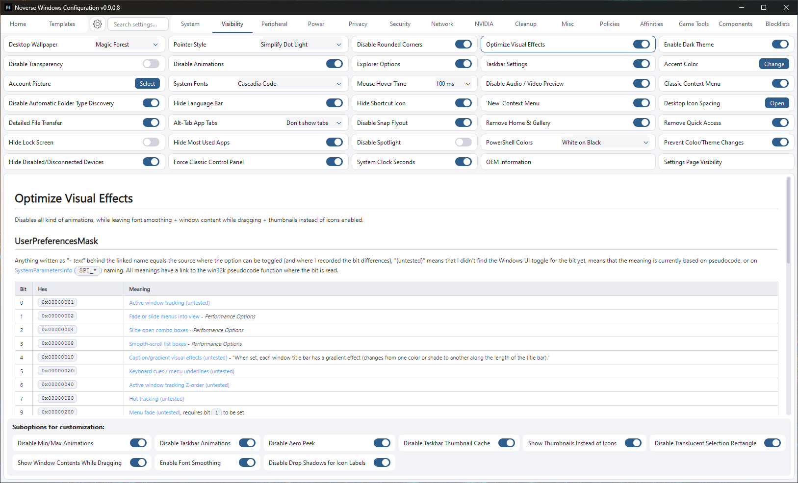
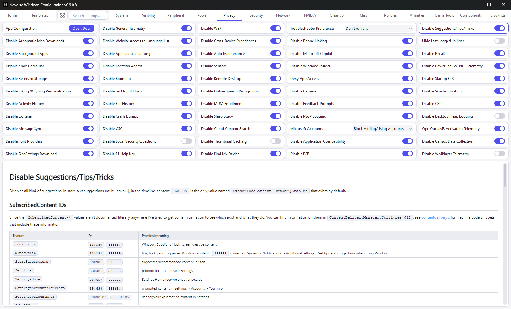

System
Operating system adjustments for services, scheduling, storage, startup behavior and more.
View DocumentationIncludes updates & Discord role.
WinConfig is based on my personal research on several topics, which I began documenting around July 2024.
| Feature | WinConfig | Typical tools |
|---|---|---|
| Execution transparency | Displays each change | Hidden |
| State detection | Dynamic | Stored in registry |
| Documentation | Per option notes | None |
| Selection | Extensive | Common |
| Customization control | Per change toggles | Bundled groups |




Each option has it's own somtimes detailed or less detailed documentation, containing explanations for specific changes or information for the topic itself.
Operating system adjustments for services, scheduling, storage, startup behavior and more.
View DocumentationCustomize Windows visuals and interface behavior.
View DocumentationChange input, audio, Bluetooth, display devices... behaviors/states.
View DocumentationControl several different power management features and other related options.
View DocumentationPrivacy configuration for telemetry, diagnostics, encryption, data sharing, and more.
View DocumentationChange network adapter settings including DNS, sharing controls, offloads... and miscellaneous network related features.
View DocumentationNVIDIA driver installation, control panel settings... and resource manager values.
View DocumentationClear caches, logs, histories, backups.
View DocumentationMiscellaneous external app configuration/installation, e.g. nvfetch.
View DocumentationA more detailed LGPE including keys, values and quick toggling, based on my admx-parser project.
View DocumentationConfigure MSI mode/message limit, IRQ settings (priority/policy), affinities.
View DocumentationEach tool is available under GPLv3 and can be used alongside WinConfig as standalone tools. See all my open source projects here.
Fetching description...
View RepositoryFetching description...
View RepositoryFetching description...
View RepositoryFetching description...
View RepositoryFetching description...
View RepositoryFetching description...
View RepositoryFetching description...
View RepositoryWinConfig only references hardware identifiers required for license verification: UUID, CPU ID, and board ID. If any are unavailable, it can fall back to, MAC address, video controller ID, sound device ID, or USB controller ID. No additional system data is collected, transmitted, or stored. Learn more about the firmware identifiers via the official SMBIOS documentation.
Licenses are for personal use only. Reselling, transferring, or redistributing WinConfig is prohibited unless you receive explicit written permission from Nohuto. Violations lead to immediate license revocation and a permanent ban.
Refunds are available only if no registration has been made and no Discord role has been assigned. Include proof of purchase when submitting a refund request.
Each purchase grants one hardware bound license. Manual validation is required after checkout and can take several minutes or hours. Keys do not transfer across devices without re-registration.
After purchase, a manual process begins. To get access, you must either include your Discord ID in the purchase message or send me your transaction ID so I can assign the Discord role. The role is not assigned automatically, so one of these is required. Once the role is assigned, you'll get access to a download link for the tool. After downloading, you must register via the tool, and then Nohuto will validate your registration. Joining (or already being in) the Discord server is recommended for now so you receive updates, announcements, and support. Otherwise you may miss app updates (config updates would theoretically work as long as no new section gets added).